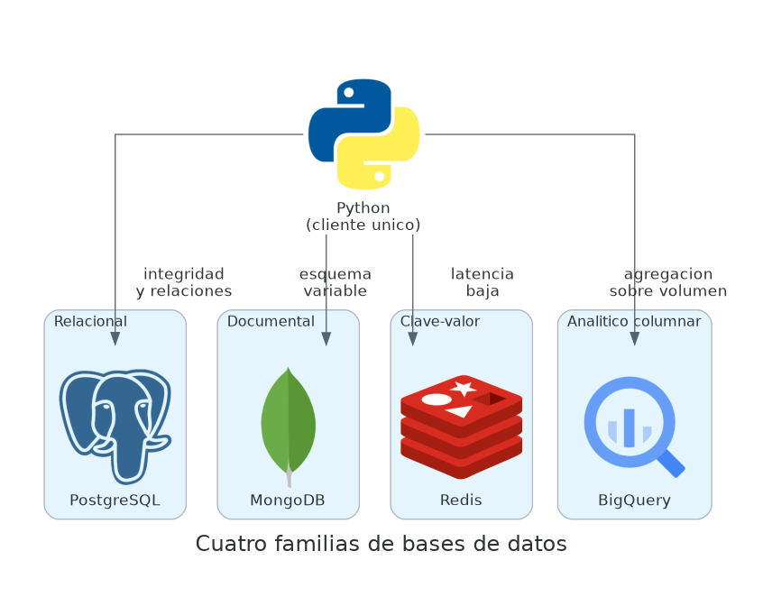
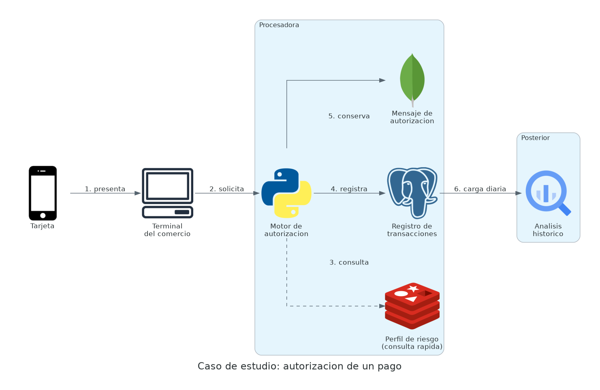
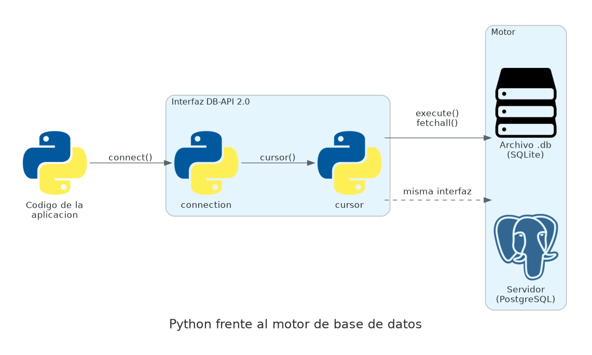

Implementacion de sistemas multiagente y gobierno de agentes. Cientifico de datos y arquitecto de datos.
| Sector | Experiencia |
|---|---|
| Telecomunicaciones | Arquitectura y explotacion de datos operativos |
| Banca | Modelado, gobierno de datos y sistemas analiticos |
| Gobierno | Integracion de fuentes y calidad de datos |
| Educacion | Formacion tecnica y diseno de programas |
dalopeznoria@gmail.comhttps://www.linkedin.com/in/dalopeznoria/
| Min. | Bloque | Modalidad |
|---|---|---|
| 15 | Panorama de las cuatro familias y la ficha de seis puntos | Exposicion |
| 15 | Presentacion del caso: procesadora de pagos | Exposicion |
| 20 | SQLite y la interfaz DB-API desde Python | Demostracion |
| 50 | Taller sobre la base de movimientos | Practica |
| 20 | Revision en vivo y cierre | Discusion |
Un archivo de hoja de calculo resuelve el almacenamiento de datos tabulares hasta cierto punto. A partir de ahi aparecen exigencias que ese formato no cubre: acceso simultaneo de varios usuarios, garantia de que una operacion se aplica de forma completa, busqueda eficiente sobre millones de registros, y control sobre quien puede leer cada dato.

| Familia | Motor | Optimiza | Cede |
|---|---|---|---|
| Relacional | PostgreSQL | Integridad, relaciones y consulta expresiva | Flexibilidad del esquema |
| Documental | MongoDB | Esquema variable y lectura de agregados completos | Consistencia entre colecciones |
| Clave-valor | Redis | Latencia muy baja en acceso por clave | Capacidad de consulta |
| Analitico columnar | BigQuery | Agregacion sobre volumen alto | Escritura por registro individual |
Cada motor del curso se documenta con esta misma estructura. Al cierre, el conjunto de fichas constituye la matriz de decision que se evalua en el proyecto final.
Todas las sesiones del curso trabajan sobre el mismo dominio. La continuidad permite que la comparacion entre motores sea directa: la misma pregunta de negocio se resuelve cuatro veces, con cuatro tecnologias.

SQLite es un motor embebido. La base completa reside en un solo archivo y el codigo de la aplicacion la abre de forma directa, sin proceso servidor ni administracion de servicio.
| Caracteristica | Implicacion practica |
|---|---|
| Motor embebido | Sin instalacion ni configuracion de red |
| Incluido en Python | El modulo sqlite3 viene en la biblioteca estandar |
| Archivo unico | La base se copia, se versiona y se comparte como cualquier archivo |
| SQL estandar | Lo aprendido aqui aplica en PostgreSQL con ajustes menores |
| Escritura de un proceso a la vez | No adecuado para concurrencia de escritura alta |

import sqlite3
conexion = sqlite3.connect("pagos.db")
cursor = conexion.cursor()
cursor.execute("SELECT COUNT(*) FROM movimientos")
total = cursor.fetchone()[0]
print(f"Transacciones en la base: {total}")
conexion.close()psycopg y una cadena de conexion distinta.
# Forma correcta
cursor.execute(
"SELECT COUNT(*) FROM movimientos WHERE ciudad_comercio = ? AND monto >= ?",
(ciudad, monto_minimo),
)
# Forma incorrecta: el valor se convierte en parte de la instruccion
cursor.execute(
"SELECT COUNT(*) FROM movimientos WHERE ciudad_comercio = '" + ciudad + "'"
)El extracto operativo del caso contiene quince columnas en una tabla
unica llamada movimientos. Al agrupar por comercio, el resultado revela
un problema:
| Valor en la columna comercio | Operaciones |
|---|---|
| Super Norteno | 521 |
| Super Nortenio | 513 |
| SUPER NORTENO | 490 |
| CAFE AURORA | 451 |
| Cafe Aurora | 432 |
| Archivo | Contenido |
|---|---|
c1_s1_b0_diagramas.py | Generacion de las tres figuras de la sesion |
c1_s1_b1_instalacion.md | Preparacion del entorno y lista de verificacion |
c1_s1_b2_generar_datos.py | Generador del caso de estudio, semilla 987654 |
c1_s1_b3_primer_contacto.py | Demostracion guiada de la interfaz DB-API |
c1_s1_b4_consultas.sql | Consultas de la sesion, en cuatro bloques |
c1_s1_b5_taller.md | Taller evaluable y criterios de calificacion |
987654 en todas las rutas de ejecucion, de
modo que los datos son identicos para todos los participantes.